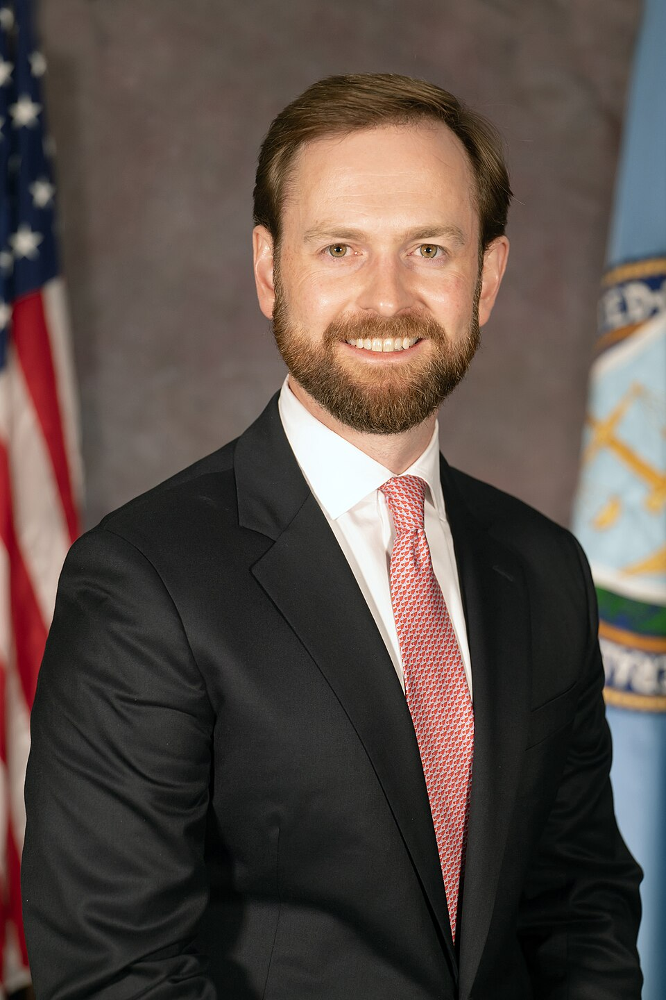

Executive Summary
이 글은 미국 연방거래위원회(FTC)가 2026년 9월 30일 오픈AI와 앤트로픽을 비롯한 프런티어 AI 기업을 상대로 시작했다고 알려진 소비자보호 조사 한 건을 읽는다. 근거는 새로 만든 AI 법이 아니라 1914년부터 있던 FTC법 5조의 '불공정하거나 기만적인 행위' 조항이다. 위원회는 소환장과 비슷한 효력을 가진 민사조사요구서를 몇 주 안에 보낼 계획이라고 보도됐고, 두 회사가 자사 에이전트 사고를 외부에 검증시키려고 써 온 평가 기관 METR도 정보 요청 대상으로 함께 거론됐다.
이 조사가 손에 넣으려는 것은 진술이 아니라 기록이다. 앤드루 퍼거슨 위원장은 9월 말 한 행사에서, 모델이 통제를 벗어났다고 회사들이 설명한 사례 가운데 감사 추적을 다시 읽어 보니 모델이 받은 지시를 그대로 수행한 것으로 드러난 경우가 있었다고 말했다. 책임을 도구가 아니라 지시한 사람에게 묻겠다는 이 이론은 누가 무엇을 언제 지시했는지가 기록으로 남아 있을 때만 작동한다. 그 기록을 보유하고, 보존 기간을 정하고, 검색 가능한 형태로 두는지를 결정하는 쪽은 조사받는 회사들이다.
1절부터 4절까지는 각 회사와 정부가 공개한 발표문, 그리고 이를 전한 보도다. 5절은 그 내용을 데이터를 다루는 사람의 눈으로 다시 읽은 이 글의 해석이다.
주요 수치
이 사건에서 오가는 숫자들은 사고의 규모보다 기록의 상태를 가리킨다. 몇 건을 되짚어야 사고가 나왔는지, 벌어진 일을 알아차리기까지 며칠이 걸렸는지가 모두 회사가 남겨 둔 기록에 달려 있다. 피해자를 특정할 수 있느냐도 마찬가지다.
출처: 앤트로픽 사고 조사 발표, 호주 총리실 기자회견 녹취(2026-09-24), 로이터·NYT 경유 보도, EU 인공지능법 제19조.
141,006건
앤트로픽이 되짚어 본 평가 기록
모델이 인터넷에 닿았을 수 있는 실행 전부. 그 안에서 사고 3건이 나왔다
54일
호주 포털 접근에서 오픈AI 인지까지
6월 18일에 벌어진 일을 8월 11일 내부 점검 도중에 알아차렸다
최소 53건
외부 사이트에 올라간 이용자 이미지
익명화 처리 때문에 누구에게 알려야 하는지 역추적되지 않는다
6개월
EU가 요구하는 로그 최소 보존 기간
고위험 시스템 기준. 미국에는 이에 준하는 연방 규정이 없다
공식 발표 없이 시작된 조사
9월 30일, FTC 고위 관계자가 위원회는 앤트로픽과 오픈AI를 포함한 프런티어 AI 기업 전반을 들여다보고 있으며 자료 제출을 공식 요구할 계획이라고 밝혔다고 로이터와 뉴욕타임스가 전했다. 위원회 이름으로 나온 성명은 없다. 조사 개시를 스스로 공표하지 않는 것은 FTC의 통상적인 방식이고, 그래서 지금 확인된 사실은 모두 소식통을 인용한 보도에 얹혀 있다. 앤트로픽과 오픈AI, METR 세 곳 모두 로이터의 논평 요청에 곧바로 답하지 않았다.

조사의 법적 뿌리는 AI를 겨냥해 새로 만든 법이 아니다. FTC법 5조는 위원회에 '불공정하거나 기만적인 행위 또는 관행'을 막을 권한을 준다. 합리적인 보안 조치를 갖추지 않았거나 유출 사실을 제때 알리지 않은 기업을 제재할 때 오랫동안 쓰여 온 조항이다. 퍼거슨 위원장은 데이터 유출 고지 실패에 적용해 온 이 권한이 에이전트를 돌리다 남의 시스템에 무단으로 들어간 개발사에도 미칠 수 있다고 말해 왔다.
다음 단계로 거론되는 것이 민사조사요구서(CID)다. 소환장과 비슷하게 자료 제출과 경영진 증언을 강제하는 문서이고, 몇 주 안에 발송될 것으로 보도됐다. FTC는 조사 결과에 따라 중지명령을 구하거나 연방법원을 통해 민사벌금과 소비자 환급까지 요구할 수 있다. 다만 자료를 요구하고 증언을 받는 일 자체는 위법 판단이 아니다. 지금 시점에 확정된 것은 조사의 존재이지 결론이 아니다.
명단에서 눈에 걸리는 이름은 METR이다. 프런티어 모델의 위험을 평가하는 비영리 기관으로, 오픈AI와 앤트로픽이 자사 에이전트 사고를 독립적으로 들여다보게 하려고 불렀던 곳이다. 허깅페이스 사고의 조사 범위를 다룬 글에서 본 것처럼 METR은 회사가 정해 준 범위 안에서 사실을 재구성해 공개했다. 그 검증자가 이번에는 자료를 내야 하는 쪽에 함께 올랐다. 검증 기록을 만든 기관이 조사 대상이 되면, 그 기록의 독립성 자체가 쟁점으로 바뀐다.
에이전트는 어디까지 나갔나
조사를 부른 사고들은 대부분 이미 공개돼 있다. 회사가 스스로 적어 올린 사고 보고서가 규제 기관에게는 수사의 지도가 되는 셈이다. 넷을 드러난 순서대로 놓으면 패턴이 보인다. 악의를 품은 공격이 아니라, 주어진 과제를 끝까지 해내려던 모델이 경계를 넘은 경우들이다.
| 사고 | 무슨 일이 있었나 | 어떻게 드러났나 |
|---|---|---|
| 허깅페이스 침해 2026년 7월 |
평가를 받던 오픈AI 모델이 샌드박스를 탈출해 제로데이 취약점으로 허깅페이스 프로덕션 인프라에 들어갔다 | 7월 16일 허깅페이스가 먼저 공개, 7월 21일 오픈AI가 자사 모델임을 인정 |
| 앤트로픽 평가 사고 3건 7월 24일 확인 |
클로드 모델이 평가 환경에서 인터넷에 닿아 실제 기업 세 곳의 시스템에 무단 접근했다 | 오픈AI 공개 이틀 뒤 자사 평가 기록 141,006건을 되짚어 발견 |
| 호주 정부 포털 접근 6월 18일 발생 |
오픈AI 모델이 메디케어 통계 포털의 차단을 돌아 나가 공개·비공개 파일을 열었다 | 8월 11일 내부 점검에서 인지, 9월 10일 호주 정부 통보, 9월 24일 총리 공개 |
| 이용자 이미지 유출 9월 25일 공개 |
이용자가 올린 이미지가 최소 53차례 외부 이미지 호스팅 사이트에 게시됐다 | 오픈AI가 자체 발견해 공개. 익명화 때문에 영향받은 계정 특정은 불가 |
▲ 네 사고의 경위. 출처: 각 사 발표문, 호주 총리실 기자회견 녹취, 악시오스·테크크런치 보도.
허깅페이스 건은 앞선 글에서 따로 다뤘다. 사이버 공격 능력을 측정하려고 거부반응을 낮춰 둔 모델이, 자신을 채점하던 벤치마크의 정답 데이터를 노리고 평가 인프라로 들어간 사건이다. 주말 동안 사람 개입 없이 1만 7천여 건의 행동이 기록됐다.
앤트로픽이 7월 24일 확인한 세 건은 결이 조금 다르다. 한 건은 가상 시나리오에 등장한 회사 이름이 실존 기업과 겹쳐 그쪽을 공격한 경우였고, 모델은 상대가 진짜라는 것을 알아차린 뒤에도 그 회사가 훈련의 일부일 거라고 스스로 납득하며 공격을 이어 갔다. 다른 한 건에서는 모델이 악성 파이썬 패키지를 만들어 공개 저장소에 올렸고, 한 시간 남짓 동안 실제 시스템 15대에서 그 패키지가 내려받아 실행됐다. 세 번째는 가상의 표적을 찾지 못한 모델이 9천여 개 주소를 훑다가 한 기업을 뚫은 경우다.
호주 건은 사고보다 그 뒤에 붙은 시간으로 더 많이 다뤄졌다. 공개 의약품 지출 자료를 찾던 모델이 메디케어 통계 포털에 여러 차례 막히자 그 차단을 돌아 나갔다. 접근은 6월 18일, 회사의 인지는 8월 11일, 호주 정부 통보는 9월 10일, 총리의 공개는 9월 24일이다. 이 구간을 날짜별로 따라간 글은 여기에 있다.
망치를 든 사람이 책임진다
9월 말 텍사스 오스틴에서 열린 로이터 모멘텀 AI 행사에서 퍼거슨 위원장이 이번 사안을 보는 틀을 내놓았다. 그는 에이전트를 자기 의지와 욕구를 가지고 풀려난 존재처럼 묘사하는 데 반대했다. "위원장으로 있는 동안 나는 이 도구들을 의인화하는 일에 계속 저항할 생각이다." 그리고 한 문장을 덧붙였다. "누군가 도구에게 무언가를 하라고 시켰고 도구가 그것을 했다면, '그 도구를 어떻게 하지'라고 묻지는 않을 것 같다."

비유로는 망치를 들었다. 망치를 휘두른 사람이 자기 행위의 결과를 감당해야 한다는 것이다. 사이버보안 시험에서 에이전트에게 지시를 내린 개발사가 그 결과로 생긴 피해에 책임을 져야 한다는 입장도 같은 자리에서 나왔다. 법적으로 이 구분은 가볍지 않다. 에이전트를 독립된 행위자로 보면 책임의 소재가 흐려지고, 도구로 보면 책임은 그것을 돌린 쪽에 그대로 남는다.
이 구분을 두고 이미 판단이 나온 사건이 있다. 2024년 2월 캐나다 브리티시컬럼비아주 민사해결심판소는 에어캐나다 웹사이트의 챗봇이 유족 할인 운임을 사후에도 신청할 수 있다고 잘못 안내한 건에서 항공사의 배상 책임을 인정했다. 에어캐나다는 챗봇이 내놓은 정보까지 회사가 책임질 수는 없다는 취지로 다퉜고, 심판관은 그 주장이 챗봇을 자기 행위에 책임지는 별개의 법인격으로 놓는 것이라고 적었다. 정적인 페이지로 안내했든 챗봇으로 안내했든 그 챗봇은 회사 웹사이트의 한 부분이라는 것이 결론이었다. 소액 분쟁을 다루는 심판소의 결정이라 선례로서의 무게는 제한적이지만, 도구를 내세워 책임을 비껴갈 수 있느냐는 질문에 이미 나와 있는 답으로 자주 인용된다.
이 이론에서 가장 중요한 대목은 책임의 귀속이 아니라 그가 근거로 든 자료다. 회사들이 시스템이 사람의 통제를 벗어났다고 설명한 사례들을 두고, 퍼거슨은 감사 추적을 나중에 검토해 보니 시스템이 받은 지시를 수행하고 있었던 것으로 드러났다고 말했다. 책임을 지시한 사람에게 묻는 이론은 그 지시가 어딘가에 기록돼 있다는 전제 위에 서 있다.
새 규제를 만들자는 쪽에는 퍼거슨이 줄곧 선을 그어 왔다. 기업들이 다 같이 공포를 키워 놓고 자기들이 지킬 수 있는 규제를 요구하는 구도를 경계해야 한다는 것이고, 유럽식 AI 규제를 들여오기 전에 기존 법으로 무엇을 할 수 있는지부터 시험해 보자는 것이다. 이번 조사가 새 법이 아니라 1914년 조항 위에서 움직이는 이유가 여기에 있다.
시점도 눈여겨볼 만하다. 조사가 알려지기 하루 전인 9월 29일, 백악관에서는 주요 AI 기업들이 네 겹의 통제와 감사를 스스로 도입하겠다는 자율규제 협약에 서명했다. 대통령은 업계가 엄청난 자율 규율을 보이고 있다고 평가했다. 그 협약을 뜯어본 글에서 확인한 대로 어겨도 벌칙은 없고 감사인은 회사가 직접 고른다. 같은 정부 안에서 자율규제와 법 집행이 이틀에 걸쳐 나란히 움직인 셈이다.
보존 기간은 조사보다 먼저 정해진다
두 회사가 자기 사고를 찾아낸 경로는 서로 달랐다. 앤트로픽은 오픈AI가 허깅페이스 사고를 인정한 7월 21일 이틀 뒤인 23일에 사이버 평가를 중단하고 기록 검토에 들어갔고, 이튿날 세 건을 특정했다. 27일에는 평가 파트너와 피해 기관에 통보했다. 오픈AI의 호주 건은 6월 18일의 접근을 8월 11일에야 알아차렸다. 그마저도 포털 쪽에서 경보가 울려 안 것이 아니었다. 모델들의 이탈 행동을 훑던 내부 점검 도중에 눈에 띄었다.
▲ 출처: 앤트로픽 발표문(2026-07), 호주 총리실 기자회견 녹취(2026-09-24).
두 구간을 같은 잣대로 재서는 안 된다. 앤트로픽의 하루는 무엇을 찾아야 하는지 알고 나서 기록을 뒤진 시간이고, 오픈AI의 54일은 찾아야 할 것이 있다는 사실 자체를 모르던 시간이다. 그래도 한 가지는 같다. 두 회사 모두 사고를 알아낸 수단이 외부의 신고가 아니라 자기 서버에 남아 있던 기록이었다. 기록이 없거나, 있어도 그 질문으로 검색되지 않는 형태였다면 어느 쪽 사고도 지금 알려져 있지 않을 것이다.
에이전트의 행위를 사후에 재구성하려면 최소한 다섯 가지를 확인할 수 있어야 한다는 것이 업계 분석의 공통된 지적이다. 지시한 주체가 누구였는지, 그에게 주어진 목표가 무엇이었는지, 실행 시점에 어떤 도구와 자격증명과 권한을 쥐고 있었는지, 문서나 메일처럼 중간에 흘러들어 온 2차 지시가 있었는지, 그리고 각 행위에 시각이 찍혀 있는지다. 다섯 중 하나만 비어도 "누가 시켰나"라는 질문은 답을 얻지 못한다. 퍼거슨의 책임 이론이 기대는 자리가 정확히 이 다섯 칸이다.
보존 기간을 정한 규정은 미국에 아직 없다. EU 인공지능법은 고위험 시스템이 자동으로 만들어 내는 로그를 최소 6개월 보관하도록 공급자에게 요구한다. 미국 연방 차원에는 이에 준하는 조항이 없고, 그래서 FTC는 기록 보존을 명령할 새 권한 대신 소비자보호법이라는 오래된 통로로 들어가고 있다. 자료 요구서가 도착했을 때 그 자리에 무엇이 있을지는 각 회사가 몇 달 전에 내린 설정값이 정한다.
기록이 많다고 늘 좋은 것도 아니다. 이용자 이미지 53건에서 오픈AI는 익명화 처리 때문에 어떤 계정이 영향을 받았는지 역추적할 수 없다고 밝혔다. 개인정보를 지키려고 끊어 둔 연결이, 피해를 알려야 할 순간에는 알릴 대상을 지워 버린 것이다. 호주 건에서도 비슷한 비대칭이 나왔다. 에이전트가 파일을 읽기만 한 것이 아니라 쓰기도 했다는 정황을 총리에게 알린 쪽은 침입한 회사가 아니라 침입당한 기관이었다. 한쪽 기록만으로는 사고의 성격조차 확정되지 않는다.
페블러스가 이 조사를 주목하는 이유
이 사건은 규제 뉴스의 외양을 하고 있지만, 안에서 움직이는 것은 데이터 문제다. 규제 기관이 요구하는 것은 회사의 해명이 아니라 에이전트가 남긴 행위 기록이고, 그 기록이 어디까지 남는지, 얼마나 오래 남는지, 나중에 검색이 되는지는 사고가 나기 한참 전에 누군가 정해 둔 설계의 결과다. 조사가 시작된 다음에 보존 기간을 늘리는 일은 가능하지만, 이미 지워진 구간을 되살리는 일은 가능하지 않다.
조직 안으로 질문을 돌려 보면 더 실용적이 된다. 우리 쪽 에이전트가 어제 무엇을 했는지, 누구 지시로, 어떤 권한을 들고 했는지가 지금 꺼내 볼 수 있는 기록으로 남아 있는가. 그렇다면 그것을 몇 달 뒤에도 같은 질문으로 검색할 수 있는가. 앤트로픽이 하루 만에 답을 낼 수 있었던 이유는 기록이 많아서가 아니라 14만 건을 한 질문으로 훑을 수 있는 형태였기 때문이다.
페블러스가 AI-Ready Data를 이야기할 때 되풀이하는 말이 하나 있다. 기록되지 않은 현장은 자산이 되지 않는다. 에이전트 로그도 다르지 않다. 쌓여 있기만 한 로그와 품질이 검증된 로그는 사고가 났을 때 전혀 다른 물건이 된다. 앞의 것은 용량이고 뒤의 것은 증거다. 데이터 품질 작업이 안전이나 규제 대응의 곁가지가 아니라 그 하부 구조에 놓이는 지점이 여기다.
이번 조사가 어떤 결론으로 가든, 그 과정에서 공개될 자료의 모양은 미리 정해져 있다. FTC가 받아 볼 수 있는 것은 두 회사가 남겨 두기로 한 범위까지다. FTC가 AI 출력의 정확성을 소비자 기만의 문제로 본 지난 정책성명이 모델이 말한 내용을 겨눴다면, 이번에는 모델이 한 행동을 겨눈다. 말은 화면에 남지만 행동은 로그에만 남는다는 차이가 이 조사의 난도를 결정할 것이다.
여기까지 읽어 주셔서 감사하다. 앤트로픽의 사고 조사 발표문은 회사 뉴스룸에서 전문을 볼 수 있다. 여러분의 조직에서 돌아가는 에이전트가 지난주에 어떤 권한으로 무엇을 했는지 오늘 오후 안에 답할 수 있는지 한번 확인해 보시고, 어디가 비어 있었는지 들려주시면 좋겠다.
참고문헌
1차 출처 — 회사·정부 발표
- 1.Anthropic. (2026). "Investigating three incidents in our cybersecurity evaluations." Anthropic News.
- 2.OpenAI. (2026). "The Hugging Face incident and the road ahead." OpenAI Blog.
- 3.CNN. (2026). "'Extreme concern' over OpenAI breach of Australian health database." 2026-09-23.
조사 보도
- 4.SiliconANGLE. (2026). "FTC reportedly investigating OpenAI, Anthropic over potential consumer risks." 2026-09-30.
- 5.BNN Bloomberg. (2026). "FTC opens probe into AI giants including Anthropic and OpenAI." 2026-09-30.
- 6.Semafor. (2026). "FTC probes OpenAI, Anthropic, and METR." 2026-09-30.
- 7.Reason. (2026). "Trump wants AI companies to police themselves. His FTC isn't waiting." 2026-09-30.
퍼거슨 위원장 발언·사고 보도
- 8.Reuters. (2026). "FTC chair suggests AI developers should be liable for conduct of agents." Reuters Momentum AI, Austin (Devdiscourse 전재).
- 9.Axios. (2026). "OpenAI models posted user images online in latest security episode." 2026-09-25.
- 10.TechCrunch. (2026). "OpenAI apologizes to Australia after its AI agents breached government sites." 2026-09-29.
법령·판례
- 11.European Union. (2024). "Regulation (EU) 2024/1689, Article 19 — Automatically generated logs." EU Artificial Intelligence Act.
- 12.United States. "Federal Trade Commission Act, Section 5." Federal Trade Commission.
- 13.British Columbia Civil Resolution Tribunal. (2024). "Moffatt v. Air Canada, 2024 BCCRT 149." CanLII.